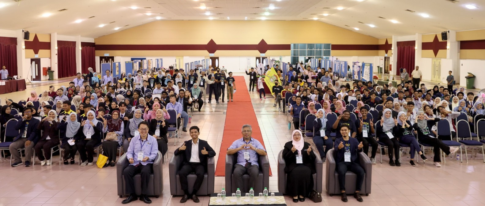

Talks
- 13th International Symposium on Applied Engineering & Science 2025, 10-11 Nov 2025, Faculty of Medicine and Health Sciences, Universiti Putra Malaysia (Serdang Campus), Selangor, Invited Speaker
- 5th Joint UNM–SWU–TUTCM Postgraduate Symposium, 11 Sep 2025, University of Nottingham Malaysia Campus, Invited Plenary Speaker
- Workshop on Advancing Tropical Agriculture Resilience and Sustainable Development in Southeast Asia, 1-4 Jul 2025, Yazhou Bay Science and Technology City, Sanya, Hainan, China, Invited Speaker
- 8th International conference on Molecular Biology and Biotechnology 2025 (ICMBB2025), 25-26 Jun 2025, UiTM Sungai Buloh, Invited Plenary Speaker
- Transcriptomics Workshop - from Experimental Design to Downstream Analysis and Insights Generation, 26-28 Nov 2024, IMU University, Bukit Jalil, Invited Speaker
- Emerging Biotechnologies: Risks, Governance, and Regional Collaboration Symposium, 19-21 Nov 2024, Le Méridien Hotel, Putrajaya, Invited Speaker
- 7th International Conference on Applied Sciences, Engineering, Technology and Management (ICASETM 2024), 21-22 Oct 2024 Jakarta, Indonesia, Invited Virtual Keynote Speaker
- 2nd Global Meet on Applied Science, Engineering and Technology (#Applied2024), 23-25 Sep 2024 Dubai, United Arab Emirates, Invited Keynote Speaker
- Joint Webinar between Universiti Kebangsaan Malaysia (Institute of Systems Biology) and National Cheng Kung University (University Center of Bioscience and Biotechnology), 3 May 2024, Moderator
- Advances of Agriculture, Aquaculture, and Biomedical Sciences (農業與醫藥新知國際研討會), 25-26 Mar 2024 Conference Room @Library NCKU Tainan, Taiwan, Invited Speaker
- Public Lecture "Omics approaches in tapping into tropical bioresource", 4 Dec 2023 Biosciences and Biotechnology Building, 3F, 893S1, National Cheng Kung University, Taiwan.
- ChatGPT: Its Effect on Tertiary Education (Good Capitalism Forum), 31 Oct 2023, Monash University Malaysia, Invited Speaker
- International Science and Technology Colloquium (i-COSTECH), 8 Jun 2023, (Online), Invited Speaker
- Joint 11th Asia Oceania Human Proteome Organization (AOHUPO) and 7th Asia Oceania Agricultural Proteomics Organization (AOAPO) Congress 2023 "Systems Biology Study of Botanical Carnivory", 8-10 May 2023, Max Atria @ Singapore Expo, Singapore. Selected Oral Presenter
- The 46th Annual Conference of the Malaysian Society for Biochemistry and Molecular Biology 2022 (MSBMB46) "Systems Biology of Tropical Pitcher Plants: From Profiling and Functional Analysis to Applications", 24-25 Aug 2022, Bangi Resort Hotel, Selangor, Invited Speaker
- INBIOSIS Webinar Series 7/2022 "Tropical Plant Functional Genomics: From Panomics to Translational Applications", 13 May 2022, (Webinar), Invited Speaker
- African Society for Bioinformatics and Computational Biology (ASBCB) CoSI webinar "Recent Advancements in Computational Plant Genomics", 16 Mar 2022, (Webinar), Invited Speaker
- Virtual Podium Asia Pacific 2021, 29 Nov - 2 Dec 2021 (Webinar), Lightning Talk Speaker
- The 4th International Conference on Applied Biochemistry and Biotechnology (ABB 2021), 9-11 Aug 2021 (Webinar), Invited Speaker
- UPM Industrial Webinar "LET’S EXPLORE THE NEXT GENERATION SEQUENCING!", 3 Jul 2021(Webinar), Invited Speaker
- Plant Genomics and Gene Editing Congress: Asia, 20-21 Apr 2021 (Webinar) pwd: PGCA21, Invited Speaker
- National Conference on Precision Biotechnology in Agriculture (NCPBA), 8-10 Dec 2020 (Webinar), Invited Speaker
- The 1st International BioDesign Research Conference, 1-18 Dec 2020 (Webinar), Satellite Talk Speaker
- International Virtual Conference on Innovations and Recent Trends in Genomic Research ICITGR' 20, 30 July 2020 (Webinar), Keynote Speaker
- UNMC 3rd School of Pharmacy Scientist Seminar (SoPSS), 18 May 2020 (Webinar), Invited Speaker
- Rotary Club of Petaling Jaya Public Talk, 12 May 2020 (Zoom meeting), Invited Speaker
- Rotary Club of Subang Public Talk, 6 May 2020 (Zoom meeting / FB Live), Invited Speaker
- 27th FAOBMB & 44th MSBMB Conference (International), 19-22 Aug 2019, Berjaya Times Square Hotel, Kuala Lumpur
- 6th Plant Genomics & Gene Editing Congress Asia/ Microbiome for Agriculture Congress Asia (International), 29-30 Jul 2019, Grand Millennium Hotel, Kuala Lumpur, Invited Speaker
- Empowering Agricultural Research through (Meta) genomics 2019 (International), Kasetsart University, 25 Jun 2019, Bangkok, Thailand, Invited Speaker
- Multi-omics approach in plant systems biology (International), Chulalongkorn University, 19 Nov 2018, Montien Hotel, Bangkok, Thailand, Invited Speaker
- 2014th Biological Symposium (Institutional), National Institute of Genetics, Japan, 30 Aug 2018
- Symposium on Evolutionary Genetics and Omics (International), National Institute of Genetics, Japan, 13-14 Jul 2018
- Asian Regional Conference on Systems Biology 2017 (International), INBIOSIS, UMBI, FST, Chulalongkorn University, 20-22 Nov 2017, Putrajaya Marriott Hotel, Speaker/ Organising Committee
- Simposium Bioteknologi (National), Jabatan Kimia Malaysia, 20-21 Sep 2017, Hotel Armada, Petaling Jaya, Invited Speaker
- Graduate Seminar (Institutional), Tokyo University of Science, Japan, 13 Sep 2017, Invited Speaker
- 81st Annual Meeting of the Botanical Society of Japan (International) , Botanical Society of Japan, 8-10 Sep 2017, Tokyo University of Science, Japan, Invited Speaker
- International Proteomics Conference 2017 (International), Malaysian Agri-Proteomics Society, 15-17 Aug 2017, KLTC, Kuala Lumpur, Speaker/ Organising Committee6
- 13th Asian Congress on Biotechnology 2017 (International), Asian Federation of Biotechnology & Thai Society for Biotechnology, 23-27 Jul 2017, Pullman Khon Kaen Raja Orchid Hotel, Thailand
- Bioinformatics Talk (Institutional), Faculty of Biotechnology and Biomolecular Sciences, Universiti Putra Malaysia, 20 Dec 2016, Invited Speaker
- BIT`s 7th World Gene Convention-2016 (International), BIT Congress Inc., 3-5 Nov 2016, Sheraton Shanghai Waigaoqiao Hotel, China
- 10th Asia-Pacific Biotech Congress (International), OMICS International, 25-27 Jul 2016, Atrium Avani Hotel Bangkok, Thailand
- 4th PACBIO User Group Meeting (International), Pacific Biosciences, 8-9 Jun 2016, Grand Copthorne Waterfront Hotel, Singapore
- Research Seminar (International), AIST Tsukuba, Japan, 9 Mar 2016, Invited Speaker
- Graduate Seminar (International), Saitama University, Japan, 8 Mar 2016, Invited Speaker
- Seminar Current Topics in Genetics and Molecular Biology (Institutional), Institute of Biological Sciences, Universiti Malaya, 29 Sep 2015, Invited Speaker
- 3rd Asian Regional Conference on Systems Biology 2015 (International), INBIOSIS & TriSys, 8-9 Sep 2015, Hotel Bangi-Putrajaya, Selangor, Organising Committee
- Biotechnology Talk (Institutional), Mawhiba All Girls Summer Camp, 6 Aug 2015, Pusat PERMATApintar Negara, Invited Speaker
- Biotechnology Talk (Institutional), School Holiday Camp, 12 Jun 2015, Pusat PERMATApintar Negara, Invited Speaker
- The International Conference on Plant Physiology 2014 (International), Malaysian Society of Plant Physiology, 26-28 Aug 2014, Sanur Paradise Plaza Hotel & Suites, Bali, Indonesia
- 23rd Malaysian Society of Plant Physiology Conference (National), Malaysian Society of Plant Physiology, 18-20 Dec 2012, Bayview Hotel, Langkawi, Malaysia
MASS MEDIA / OP-ED / POPULAR WRITINGS
- Goh H-H. (2025) Gene editing — Malaysia’s next growth engine for agriculture and innovation. The Edge Malaysia 24 Oct 2025.
- Goh H-H. (2025) Malaysia's green path to food security on World Food Day 2025. New Straits Times 24 Jul 2025.
- Goh H-H. (2025) Future-proofing ASEAN businesses in the age of GenAI and the global trade war. The Edge Malaysia 4 Jul 2025.
- Goh H-H. (2025) Malaysia's National Training Week a good response to global warning signs. New Straits Times 16 Apr 2025.
- Goh H-H. (2025) Antarctica is shockingly fast in getting greener, with a 14-fold increase in plant coverage since 1986 due to warming. The Petri Dish 28 Feb 2025
- Goh H-H. (2024) Prioritising Community over Commercialisation for a Sustainable Malaysia. The Petri Dish 4 Dec 2024
- Goh H-H. (2024) Empowering farmers is key to securing the future of food. New Straits Times 14 Oct 2024: 15.
- Goh H-H. (2023) Healthy soil vital to our needs. New Straits Times 22 Nov 2023: 16.
- Goh H-H. (2023) Regenerative farming vital. New Straits Times 7 Aug 2023: 18.
- Goh H-H. (2023) 2023, the year of skills with ChatGPT. The Edge Malaysia 8 May 2023: 48-49.
- Baharin A, Ting T-Y & Goh H-H* (2023) Omics Studies on Botanical Carnivory. Scholarly Community Encyclopedia.
- Goh H-H. (2023) ChatGPT will revolutionise the way researchers work. New Straits Times 20 Mar 2023; Khmer Times 23 Mar 2023
- Othman SMIS, Mustaffa AF, Che-Othman MH, Samad AFA, Goh H-H, Zainal Z & Ismail I (2023) miRNA Biogenesis and Its Regulation in Plant Transcripts. Scholarly Community Encyclopedia.
- The legal, scientific and policy-making aspects of biosafety put under the scope. The Petri Dish Dec 2022-January 2023: 11.
- Goh H-H & Baharum SN (2022) Pertanian, penternakan pintar pemangkin hasil lumayan, lestari. Berita Harian 6 August 2022: 12.
- Goh H-H. (2022) Adopt smart farming towards sustainable food security. New Straits Times 15 Jun 2022:10.
- Goh H-H. (2022) Food security should be nation's top priority. New Straits Times 26 May 2022:12.
- Natnan ME, Mayalvanan Y, Jazamuddin FM, Aizat WM, Low C-F, Goh H-H, Azizan KA, Bunawan H & Baharum SN (2022) Omics Strategies in Infectious Fish Disease Management. Scholarly Community Encyclopedia.
- Ting T-Y & Goh H-H. (2022) Molecular Structure and Biochemistry of Post-Proline Cleaving Enzymes. Scholarly Community Encyclopedia.
- Goh H-H. (2021) Many lessons to take into 2022. New Straits Times 14 Dec 2021:15.
- Goh H-H. (2021) Plant digestive juice: replenish or not? Atlas of Science 10 Nov 2021.
- Goh H-H. (2021) We must prepare workers for tech-based future. New Straits Times 22 Jul 2021:12.
- Goh H-H. (2021) Blockchain can help smoothen the supply chain network. New Straits Times 14 Jul 2021:9.
- Goh H-H. (2021) We must rethink how we produce and consume food. New Straits Times 28 Apr 2021:15.
- Goh H-H. (2021) What we need to do to realise potential of local fruits. New Straits Times 18 Mar 2021:11.
- Goh H-H. (2021) Organic farming the way to go. New Straits Times 13 Mar 2021:11.
- Goh H-H. (2020) The future of food, nutrition. New Straits Times 18 Sep 2020:12.
- Goh H-H. (2020) Out of labs and onto kitchen tables. New Straits Times 13 Sep 2020:24.
- Goh H-H. (2020) How to boost our food security. New Straits Times 10 Sep 2020:10.
- Goh H-H. (2020) Future-proofing the food supply chain. The Star 10 Sep 2020:14.
- Goh H-H. (2020) New roadmap for bioeconomy in the era of Covid-19. New Straits Times 5 Sep 2020:15.
- Goh H-H. (2020) Growth of Malaysian bioeconomy sector. The Star 4 Sep 2020:17.
- Goh H-H. (2020) A survival guide for varsity students amid Covid-19. The Star 31 May 2020 STAREDU:8.
- Goh H-H. (2020) 10 tips for students staying on campus. New Straits Times 15 Apr 2020.
- Goh H-H. (2020) Turning COVID-19 crisis into opportunities. New Straits Times 14 Apr 2020:21.
- Goh H-H. (2020) The importance of social distancing during a pandemic. New Straits Times 28 Mar 2020.
- Liew GH, Cho WT & Goh H-H. (2020) Prospects just as good with TVET. New Straits Times 14 Mar 2020:15.
- Goh H-H. (2019) Let's avoid unfair climate change target. New Straits Times 22 Dec 2019:16.
- Goh H-H. (2019) A roadmap for low carbon economy. New Straits Times 14 Dec 2019:19.
- Goh H-H. (2019) We dislike GM Foods because we're ignorant about them. New Straits Times 9 Aug 2019:52.
- Goh H-H. (2019) Putting the shine back on our golden crop. New Straits Times 1 May 2019:57.
- Goh H-H. & Bunawan H. (2018) Probiotics promote healthier plants. New Straits Times 23 October 2018:14.
- Goh H-H. (2018) A healthy soil is important. New Straits Times 11 October 2018:15.
- Mohd Salleh F’I. & Goh H-H. (2017) Tapping Carnivorous Pitcher Plants for Food Processing Industry. Impact: Advancing Knowledge and Technology:Towards National Transformation 2050 (TN50), Nov 2017:16.
- Aizat W.M., Mazlan O., Abdul Rahman A., Sanusi S., Mamat S.F., Azizan K.A., Goh H-H., Baharun S.N. & Normah M.N. (2017) Unravelling Mangosteen Mystery. Impact: Advancing Knowledge and Technology:Towards National Transformation 2050 (TN50), Nov 2017:16.
- Mat Saad M.F., Goh H-H. & Bunawan H. (2017) The Many Wonders of Gambir. Impact: Advancing Knowledge and Technology:Towards National Transformation 2050 (TN50), Nov 2017:44.
- Baharum S.N., Ng C.L., Aizat W.M., Azizan K.A. & Goh H-H. (2017) Ketum: Menace or medicine? Malaysian Research University Network Bulletin (MRUN), Dec 2017:60.
- Baharum S.N., Ng C.L., Aizat W.M., Azizan K.A. & Goh H-H. (2017) Ketum: Merawat atau memudaratkan? Majalah Impak Penyelidikan: Penyelidikan Translasi, Ogos 2017:25-26.
- Fitri Rosli M.A., Baharum S.N. & Goh H-H. (2016) Monkey Cup Beyond an Exotic Plant. Impact: Technologies for Society`s Well-being, Nov 2016:49.
- Zulkapli M.M., Aizat W.M. & Goh H-H. (2016) Pitcher Plants for Commercially Useful Enzyme Production. Impact: Technologies for Society`s Well-being, Nov 2016:48.
- Wan K.L., Jumaat A., Moh Raih M.F., Goh H-H. & Md Isa N. (2016) Rafflesia Genomics: Unravelling the Secrets of Giant Flower. Impact: Research & Innovation, Dec 2016:26-27.
- Jamaluddin D & Goh H-H. (2015) Betik dan khasiatnya. Impak: Penyelidikan Universiti Kebangsaan Malaysia, 2:2-3.
- Jamaluddin D & Goh H-H. (2015) Papaya: Fruit of the Day. Research Impact Magazine, 2:2-3.
- Abu Bakar S, Goh H-H. & Normah M.N. (2015) Manggis permaisuri segala buah. Impak Kongres 2015@UKM, 51.
- Goh H-H. (2015) Securing our food supply with GM crops. New Straits Times 14 Nov 2015:14-15.
Interview / Feature
- 吴和汉获生物学组科学奖 “用生物学服务国家”. 星洲日报 18 Mar 2026, 2.
- 5 Malaysian scientists who broke new ground in 2025. Free Malaysia Today 31 Dec 2025.
- How sharing your science in an opinion piece can boost your career. Nature 625:205-206. 4 Jan 2024.
- ChatGPT and its effect on tertiary education. The Vibes Malaysia 20 Nov 2023.
- The legal, scientific and policy-making aspects of biosafety put under the scope. The Petri Dish Dec 22-Jan 23, 11.
- Asian agbio players convene under ISAAA/MABIC platform. The Petri Dish Dec 22-Jan 23, 3.
- New type of carnivorous plant found in mountain bogs. National Geographic 10 Aug 2021.
Public Outreach
- Innovative Research Exhibition 2024, 12 Jun 2024
- Innovative Research Exhibition 2023, 25 May 2023
- Karnival Aspirasi Bioteknologi 2023, 14 Feb 2023
- International Postgraduate Symposium in Biology, Biotechnology, and Bioengineering (IPSBIO3), 10-11 Jan 2023
- Student visit to Plant Biotechnology Lab (Citra LMCR 3353), CPB, 2014-2016
- Mawhiba All Girls Summer Camp, Pusat PERMATApintar Negara, 2015
- School Holiday Camp, Pusat PERMATApintar Negara, 2015
- DNA Day Exhibition, HUKM UMBI, 2012

IREx2024 12 Jun Innovative Research Exhibition: Young Leaders, Green Future

Innovative Research Exhibition (IREx) 25 May 2023

INBIOSIS Biotechnology Aspiration Carnival (IBAC) 14 Feb 2023
{kind=link}
{kind=link}
{kind=link}
{kind=link}
{kind=link}
{kind=link}
Copyright © 2026 UKM